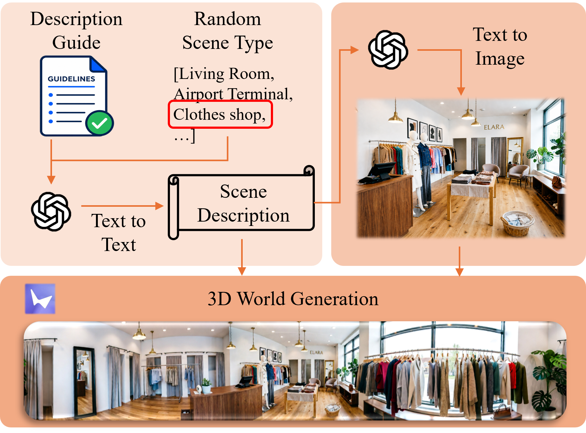
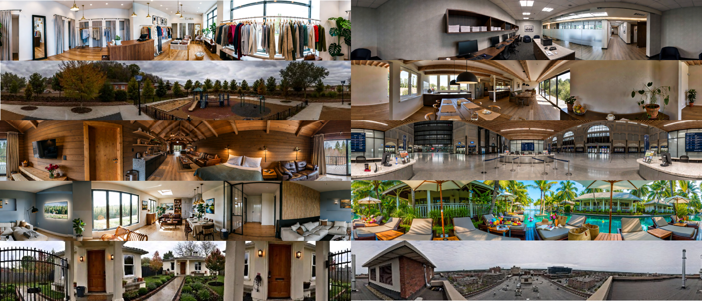
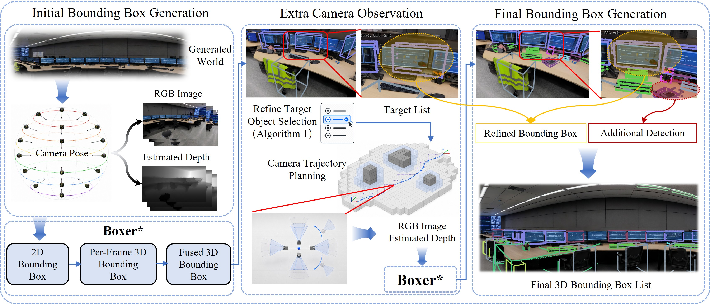
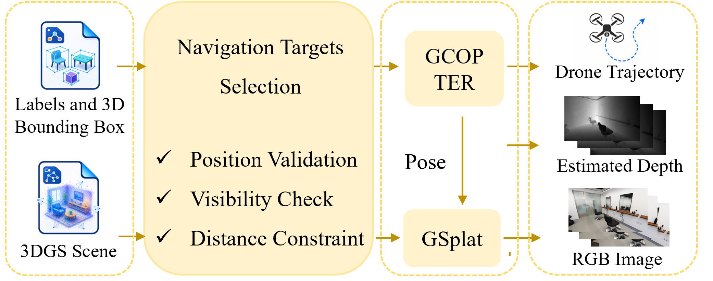

FlyMirage A Fully Automated Generation Pipeline for Diverse and Scalable UAV Flight Data via Generative World Model
1Zhejiang University 2Differential Robotics # Equal contribution

1,100
Scenes
110K+
Trajectories
100%
Automated
Pipeline
Dataset Generation Pipeline


The pipeline begins by selecting from a wide range of indoor and outdoor scene types. It creates a detailed description and reference image, then transforms them into a realistic, explorable 3D world.
The system observes the generated world from multiple viewpoints to find objects and estimate their positions. Additional camera views are used to refine the results and produce accurate 3D bounding boxes.
Detected objects are selected as navigation goals for the UAV. A motion-aware planner generates smooth, collision-free flight paths between objects while recording images, depth, UAV poses.
Stage 1 (World Generation) Outcome
Scenes
- Public & Institutional 23.6%
- Commercial & Leisure 23.0%
- Workplace & Office 13.3%
- Industrial & Utility 10.6%
- Residential 20.1%
- Transportation 9.4%
Stage 2 (Scene Annotation) Outcome
Object Bounding Box
Stage 3 (Navigation & Collection) Outcome